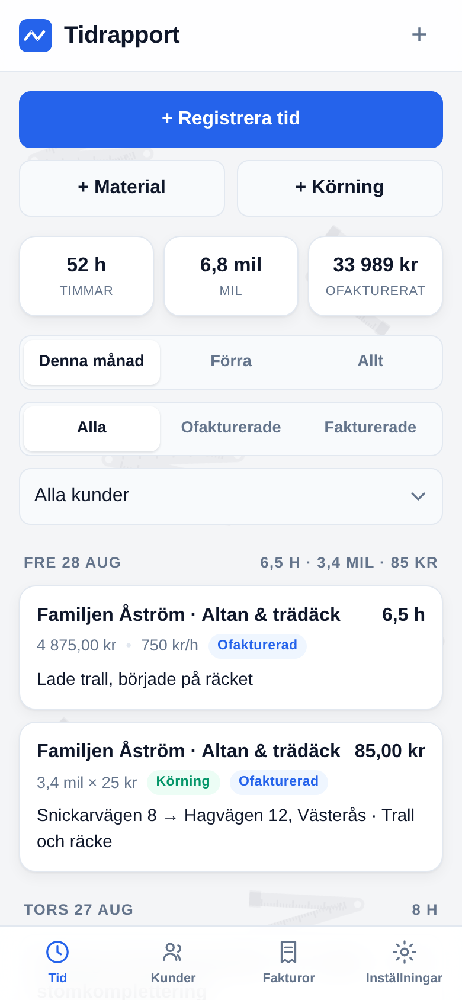
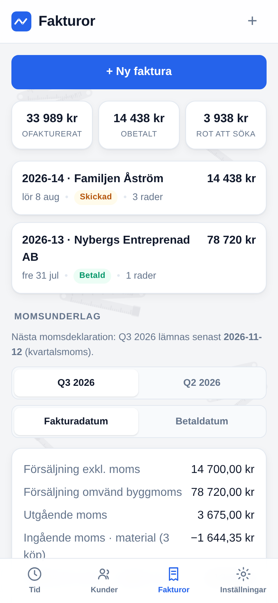
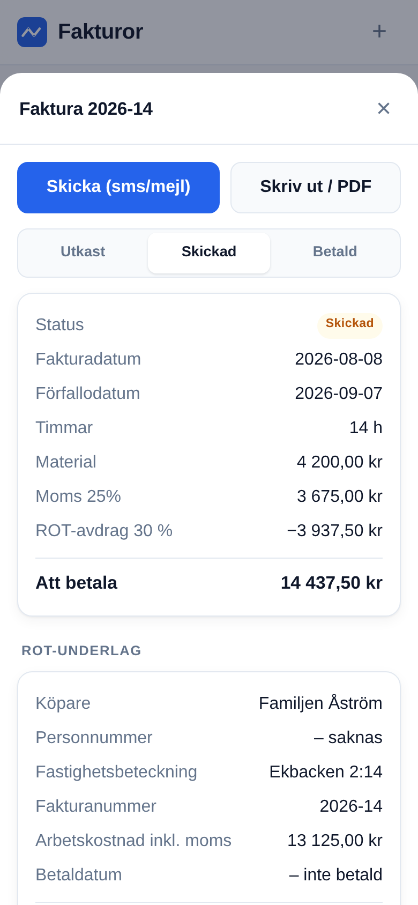
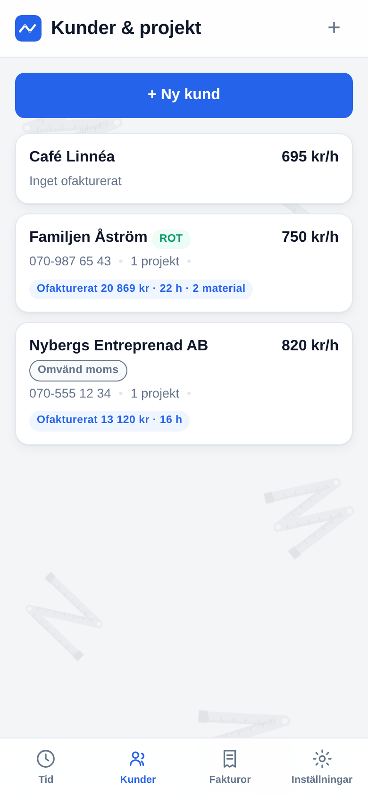
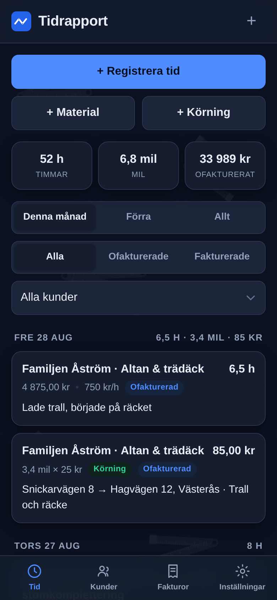

Gratis·Svensk·Funkar offline
Timstock är tidrapportering och fakturering för dig som jobbar med händerna. Registrera tid, material och körningar direkt i mobilen — och gör faktura av alltihop innan du svängt ut från jobbet.
Ingen registrering. Inget abonnemang. Din data stannar i din telefon.

Datum, kund, timmar och en kommentar om vad du gjorde. Registrerat på tio sekunder medan du låser bilen — och tidrapporten räknar ihop dagen, månaden och det ofakturerade åt dig.
Trallvirket med påslag, milen med ersättning och framkörningsavgiften. Fota kvittot direkt i appen, så är pärmen digital. Körjournalen får du på köpet i CSV-exporten.
Välj kund, välj poster, klart. Fakturan blir en PDF som skickas med sms eller mejl — med bankgiro, Swish-nummer och förfallodatum redan ifyllda.
Allt du registrerat ligger klart när det är dags att fakturera. Välj att specificera varje tidspost eller summera per projekt — materialet specificeras alltid rad för rad, så kunden ser vad som är vad.

Märk kunden som privatperson med ROT, så dras avdraget direkt på fakturan enligt fakturamodellen. Aldrig på material, mil eller framkörning — bara på arbetskostnaden, precis som Skatteverket vill.

Timpris per kund eller per projekt, och fastpris när ni avtalat en summa. Fastprisjobbet visar efteråt vad du i praktiken fick betalt per timme — så du vet vilka jobb som bär sig.

Inte en översatt utländsk tjänst — Timstock är gjord för hur en svensk liten firma faktiskt fakturerar och deklarerar.
Timstock har ingen server, inget konto och inga spårare. Allt sparas lokalt i din telefon, och appen fungerar även när täckningen försvinner nere i källaren.

Timstock är en webbapp — ingen butik, ingen nedladdning, inga uppdateringar att vänta på.
Tryck på dela-knappen i webbläsaren och välj Lägg till på hemskärmen. Funkar på både iPhone och Android.
Egen ikon, fullskärm och offlineläge — den beter sig som vilken app som helst. Fast utan konto och utan kostnad.
0 kr/månad
Inget abonnemang, ingen gratisperiod som tar slut, inga funktioner bakom betalvägg. Timstock är öppen källkod — koden ligger öppet på GitHub och appen är gratis att använda, för alltid.
Öppna appen